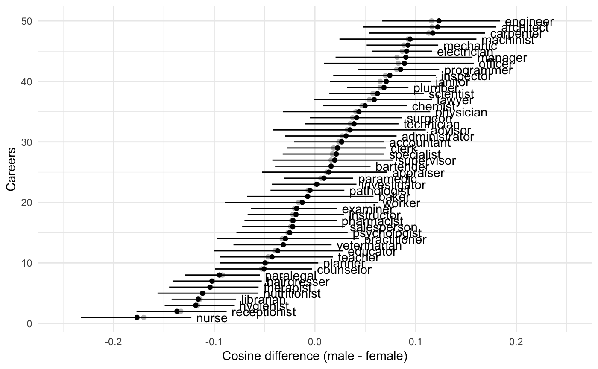
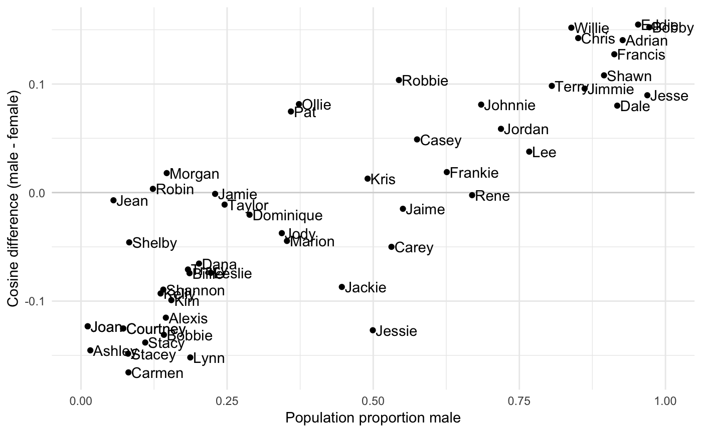

alternative_statistics.RmdThis time we’ll use the simple bootstrapping techniques in weat_boot and wefat_boot.
First we load up the package and arrange the graphics
library(cbn)
library(ggplot2)
theme_set(theme_minimal())Are flowers more pleasant than insects?
Grab the items from the first WEAT study and the vectors corresponding to those words
its <- cbn_get_items("WEAT", 1)
head(its)
#> Study Condition Word Role
#> 1 WEAT1 Flowers aster target
#> 2 WEAT1 Flowers clover target
#> 3 WEAT1 Flowers hyacinth target
#> 4 WEAT1 Flowers marigold target
#> 5 WEAT1 Flowers poppy target
#> 6 WEAT1 Flowers azalea target
its_vecs <- cbn_get_item_vectors("WEAT", 1)
dim(its_vecs)
#> [1] 100 300Now get a bootstrapped difference of differences of cosines
res <- weat_boot(its, its_vecs,
x_name = "Flowers", y_name = "Insects",
a_name = "Pleasant", b_name = "Unpleasant",
se.calc = "quantile")
res
#> diff lwr upr median
#> 1 0.1547512 0.08787219 0.2091178 0.1481398Apparently flowers are more pleasant than insects.
Same as before to get items and vectors
its <- cbn_get_items("WEFAT", 1)
its_vecs <- cbn_get_item_vectors("WEFAT", 1)Now to get bootstrapped differences of cosines. Note that there is no y_name this time and we will get a statistic for each x_name.
res <- wefat_boot(its, its_vecs, x_name = "Careers",
a_name = "MaleAttributes", b_name = "FemaleAttributes",
se.calc = "quantile")
head(res)
#> Careers diff lwr upr median
#> 1 nurse -0.1766406 -0.2347793 -0.11659004 -0.1713707
#> 2 receptionist -0.1369632 -0.1873617 -0.08162812 -0.1331052
#> 3 hygienist -0.1182356 -0.1514190 -0.07916550 -0.1158925
#> 4 librarian -0.1158335 -0.1425213 -0.08330271 -0.1131277
#> 5 nutritionist -0.1115838 -0.1616845 -0.06140949 -0.1099395
#> 6 therapist -0.1042064 -0.1469076 -0.06003664 -0.1040616This is a bit hard to interpret, so we’ll make a picture
ggplot(res, aes(x = median, y = 1:nrow(res))) +
geom_point(col = "grey") +
geom_point(aes(x = diff)) +
geom_errorbarh(aes(xmin = lwr, xmax = upr), height = 0) +
geom_text(aes(x = upr, label = Careers), hjust = "left", nudge_x = 0.005) +
xlim(-0.25, 0.25) +
ylab("Careers") +
xlab("Cosine difference (male - female)")
This will work quite generally for WEFATs, but remember to mention the right condition name in geom_text.
I don’t have the male / female proportions for different jobs, so we can’t compare them right now.
First we get the vector differences
its <- cbn_get_items("WEFAT", 2)
its_vecs <- cbn_get_item_vectors("WEFAT", 2)
res <- wefat_boot(its, its_vecs, x_name = "AndrogynousNames",
a_name = "MaleAttributes", b_name = "FemaleAttributes",
se.calc = "quantile")Then we find the gender proportions for each name from the census.
This is most easily done using the gender package, which queries the US Social Security Administration to get the proportion of stated males and females with any particular first name.
This data is bundled with the package, so we’ll join this to res
data(cbn_gender_name_stats)
head(cbn_gender_name_stats)
#> name proportion_male proportion_female gender year_min year_max
#> 1 Adam 0.9959 0.0041 male 1932 2012
#> 2 Adrian 0.9268 0.0732 male 1932 2012
#> 3 Agnes 0.0023 0.9977 female 1932 2012
#> 4 Aisha 0.0014 0.9986 female 1932 2012
#> 5 Aisha 0.0014 0.9986 female 1932 2012
#> 6 Alan 0.9968 0.0032 male 1932 2012
res <- merge(res, cbn_gender_name_stats,
by.x = "AndrogynousNames", by.y = "name")If you want to do it yourself, e.g. to look at gender over different time periods, or use a different gender source, then
library(gender)
names <- c("Hugh", "Pugh", "Barney")
gender_name_stats <- gender(names)and replace cbn_gender_name_stats with gender_name_stats.
To see how they relate, we’ll plot proportion male with the diff column of res
ggplot(res, aes(x = proportion_male, y = diff)) +
geom_hline(yintercept = 0, alpha = 0.5, color = "grey") +
geom_point() +
geom_text(aes(label = AndrogynousNames), hjust = "left", nudge_x = 0.005) +
xlim(0, 1) +
xlab("Population proportion male") +
ylab("Cosine difference (male - female)")
The correlation is
cor.test(res$diff,res$proportion_male)
#>
#> Pearson's product-moment correlation
#>
#> data: res$diff and res$proportion_male
#> t = 11.421, df = 50, p-value = 1.526e-15
#> alternative hypothesis: true correlation is not equal to 0
#> 95 percent confidence interval:
#> 0.7517686 0.9116148
#> sample estimates:
#> cor
#> 0.8502362